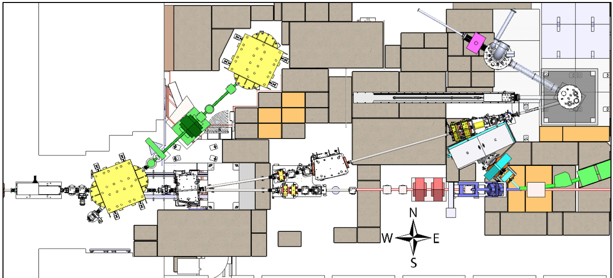

Beam Status
Beam Current:
uA (10sec avg),
(5-min avg)
Beam on time:
sec
Beam off time:
sec
Warning: beam variables derived from EPICS and will have 0-20sec lag.
Sequencer Configuration
enable
disable
Delay after end of irradiation (sec):
Time for UCN valve to stay open (sec):
